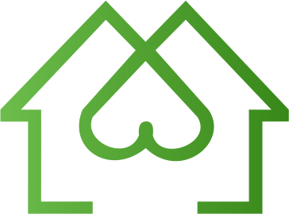

Use your left and right arrow to walk through my timeline.
The Beggining
The Beggining
On the 1st of March of 2022 I attended to NumericALL's bootcamp in partnership with ADEM (State's agency for development of employment). The scope of this trainning included basics such as HTML5 and CSS3, front-end technologies like JavaScript and React and backend trainings on PHP and Laravel.
Click the button and see what I enjoyed the most from this training:
First Project
There will be some description here.
Other Project
There will be some description here.
Match Home
This was my first team real experience where we had to build an application from scratch within 8 days. In this project I took the frontend lead. Everything was built with HTML, CSS and Vanilla JavaScript. No frameworks or libraries were used because of a team's colletive decision. This application is not online but you can see more about it with the project description and images by clicking the See More button below.
During this project I had the experience of working in a team and lead a frontend team of 3 developers (me included). It was a big challenge because of the lack of time to build a project from scratch being a junior with very low experience. Still, the results were satisfying and the application served the main purpose and please the "customers" which was a juri of 8 people.
Portifolio Project
There will be some description here.